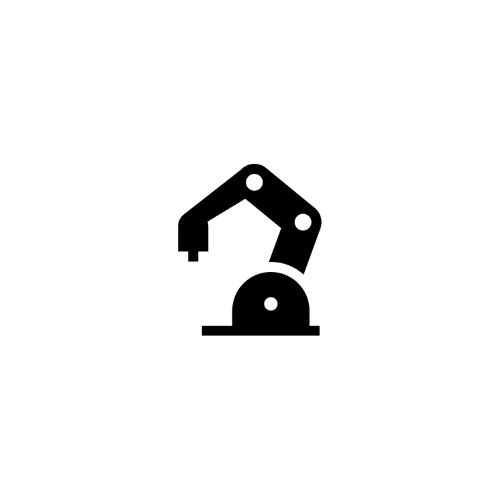
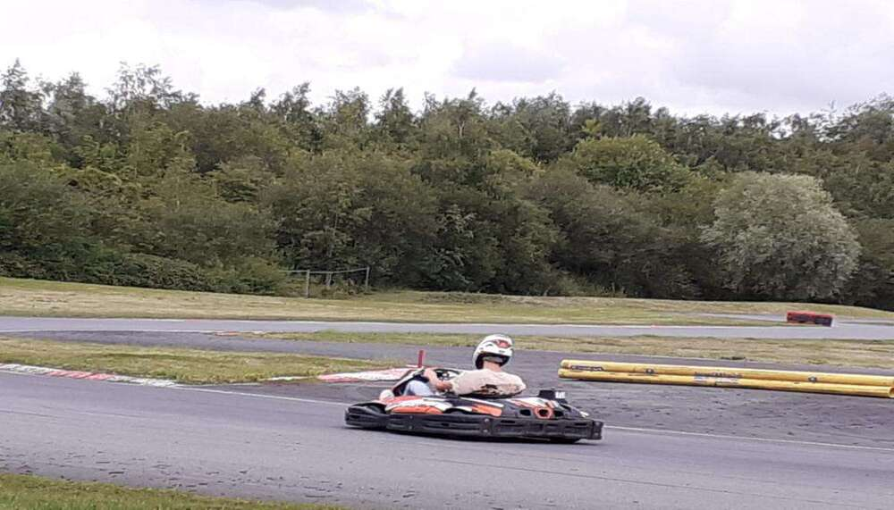

Lycéen passionné par l’informatique et particulièrement par le développement de jeux vidéo et adepte des mathématiques. A la recherche d’une alternance pour le "CNAM ENJMIN", école de jeux vidéo dans laquelle je souhaite entrer. Je travaille aussi sur des jeux vidéo et participe à des Game Jam.
Mon parcours
Appuyez sur les differentes images pour en savoir plus !
2013 - 2016
Ecole primaire Roger Salengro - Hallennes-lez-Haubourdin
La découverte de ma passion démarre dans cette école primaire avec quelques amis.
Ecole primaire Roger Salengro - Hallennes-lez-Haubourdin
La découverte de ma passion démarre dans cette école primaire avec quelques amis.
2015

Pendant la primaire, j’ai commencé à m’interreser à la robotique, j’ai donc imaginé differents robot et maquette robotique, j’ai pu partager cette envie de crée avec un ami. Au final j’ai peu recevoir durant quelques années du matériels et j’ai pu développer un robot “tank” avec un bras motorisé avec mon frère !
2015
Pendant la primaire, j’ai commencé à m’interreser à la robotique, j’ai donc imaginé differents robot et maquette robotique, j’ai pu partager cette envie de crée avec un ami. Au final j’ai peu recevoir durant quelques années du matériels et j’ai pu développer un robot “tank” avec un bras motorisé avec mon frère !
2016 - 2021
Collège Le Parc - Haubourdin
Je trouve de plus en plus de choses à faire, et de projets à developper !
Collège Le Parc - Haubourdin
Je trouve de plus en plus de choses à faire, et de projets à developper !
2018
Ma passion pour les jeux-vidéo débute en 2018 avec ma première console, la Nintendo Switch. J’ai commencé à adorer cet art et je n’ai plus jamais arrété. Depuis je souhaite en faire mon métier ! Je developpe maintenant des jeux sur Unity. J'ai aussi découvert il a quelque temps Unreal Engine le C++ et blueprint !
2018
Ma passion pour les jeux-vidéo débute en 2018 avec ma première console, la Nintendo Switch. J’ai commencé à adorer cet art et je n’ai plus jamais arrété. Depuis je souhaite en faire mon métier ! Je developpe maintenant des jeux sur Unity. J'ai aussi découvert il a quelque temps Unreal Engine le C++ et blueprint !
2020
Intertale Interactive est mon plus gros projet dans le quel je travaille énormément et dans lequel j'investis beaucoup de mon temps. En 2019 un ami m’a demandé si il était partant pour faire une communauté Discord basée sur l’informatique. Depuis il est encore actif et je le développe et grossit d'année en année!
2020
Intertale Interactive est mon plus gros projet dans le quel je travaille énormément et dans lequel j'investis beaucoup de mon temps. En 2019 un ami m’a demandé si il était partant pour faire une communauté Discord basée sur l’informatique. Depuis il est encore actif et je le développe et grossit d'année en année!
2021
De mon jeune age, j'étais utilisateur Linux. Je suis aussi dans tout ça très curieux d’en apprendre plus de jours en jours. J’ai donc été très curieux de gérer une équipe et de créer ma distribution basé sur le noyau Linux. Ce projet est en arrêt en raison des études, mais je gérais les designs des applications !
2021
De mon jeune age, j'étais utilisateur Linux. Je suis aussi dans tout ça très curieux d’en apprendre plus de jours en jours. J’ai donc été très curieux de gérer une équipe et de créer ma distribution basé sur le noyau Linux. Ce projet est en arrêt en raison des études, mais je gérais les designs des applications !
2021 - 2024
Lycée Gustave Eiffel - Armentières
Je souhaitais poursuivre mes études en faisant un bac technologique STI2D, juste après la seconde générale.
Cependant, je me suis rendu compte qu’aller en Première et en Terminale générale était surement mieux pour la
poursuite d’études et que je ne savais pas encore dans quelle étude précises je souhaitais aller post-bac. J’ai donc
poursuivis la seconde par une Première générale avec les spécialités mathématiques, physique-chimie et numérique
et sciences de l’informatique. Je suis ensuite allé en Terminale avec les spécialités mathématiques et numérique et
sciences de l’informatique avec mathématiques expert.
Lycée Gustave Eiffel - Armentières
J'ai poursuivis mes études avec les spécialités Mathématique, Physique, et NSI (bac général).
2022
Un ami a crée une communauté autour de ses jeux vidéos et des ses applications concernant des sujets autour des jeux-vidéo. Je suis donc partis l’aider à mener à bien son projets, en développant son jeu ‘Mouse War’, un jeu pixel art, 2d, mobile crée sur Unity. Nous sommes 3 sur le projet en comptant mon ami.
2022
Un ami a crée une communauté autour de ses jeux vidéos et des ses applications concernant des sujets autour des jeux-vidéo. Je suis donc partis l’aider à mener à bien son projets, en développant son jeu ‘Mouse War’, un jeu pixel art, 2d, mobile crée sur Unity. Nous sommes 3 sur le projet en comptant mon ami.
2022
Noka Reminder vient d’une problématique de tous les jours pour moi. Je devais ‘bump’ mes serveurs toutes les heures, et je ne trouvais pas de bot qui pouvait le faire automatiquement. Je me suis donc mis au travail pour commencer le développement de ce bot qui est encore en phase de développement.
2022
Noka Reminder vient d’une problématique de tous les jours pour moi. Je devais ‘bump’ mes serveurs toutes les heures, et je ne trouvais pas de bot qui pouvait le faire automatiquement. Je me suis donc mis au travail pour commencer le développement de ce bot qui est encore en phase de développement.
2023
J’ai suivis un ami sur Discord pour crée un logiciel qui détécte, gère, reconnais les objets connectés d'une maison, et grace à un systeme particulier peut facilement les afficher pour en avoir le controle et avec votre maison simplement connectée. Je ne suis pas le développeur sur ce projet je suis le designer !
2023
J’ai suivis un ami sur Discord pour crée un logiciel qui détécte, gère, reconnais les objets connectés d'une maison, et grace à un systeme particulier peut facilement les afficher pour en avoir le controle et avec votre maison simplement connectée. Je ne suis pas le développeur sur ce projet je suis le designer !
Mes centres d’intérêts et loisirs
Badminton
Joueur de Badminton depuis 2022 en club, je pratique le Badminton depuis la 6ème en passant par chaque association spotive de mon ancien collège et de mon lycée.
Jeux-vidéo
Je passe aussi du temps sur les jeux vidéo, principalement sur Fortnite, Valorant, j'aime aussi les jeux de course et les jeux de développeur indépendant comme Dani !
Education musicale
J’ai aussi fait de la trompette pendant 8 ans, de la percussion pendant 5 ans et de la guitare pendant 3 ans, j’ai en même temps fait du solfège 9 ans. J'écoute du hardstyle.

Karting
J’adore les courses automobiles, plus précisément la Formule 1 et je suis de nombreux grand prix dans mon temps libre. Je pratique aussi le karting en amateur.
Lego
Durant mes années de lycée, j'ai fait partie du club Lego et de l'équipe "Eiffel Team", l'équipe du lycée Gustave Eiffel de Armentières pour les First Lego League, une competition sur tapis et projets, en lego technique et divers systèmes et technologies. J'ai participé au régionnal 2022, au nationnal 2022 et au régionnal 2023. En terminale, n'ayant plus l'âge, je suis devenu coach d'équipe. J'ai aussi chez moi une multitude de lego, comme une Formule 1 McLaren, et un petit AT-AT.